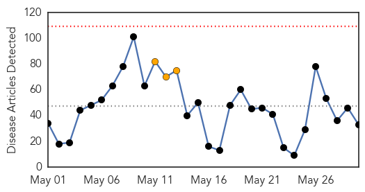
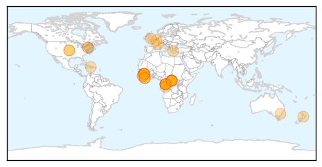

30 Day Trends
Web: 0 alerts, 3 warnings
Twitter: 0 alerts, 0 warnings
252 new deaths (11142 total)
765 new cases (27055 total)
Top Articles:
- 0.998
- UPDATE: KU Hospital says Kansas City patient tests negative for Ebola
- 0.996
- Ebola will return, veteran scientist warns
- 0.994
- 'Ebola will return', scientist warns
- 0.994
- African Union Plays Impartial Arbiter Role – Envoy Solaja
- 0.993
- 'Ebola Will Return', Warns Veteran Congolese Scientist
- 0.992
- 'Ebola will return', veteran scientist warns
- 0.992
- Ebola will return, scientist warns
- 0.992
- Scientist warns Ebola will return
- 0.992
- Jean-Jacques Muyembe: Ebola Is Not Done, Could Return
- 0.991
- 'Ebola will return', veteran scientist warns
- 0.990
- 'Ebola will return', veteran scientist warns
- 0.989
- 'Ebola Will Return', Veteran Scientist Warns — Naharnet
- 0.989
- 'Ebola will return', veteran scientist warns
- 0.987
- LIBERIA: WHO Official Stresses Proactive Ebola Surveillance
- 0.985
- Researchers unraveling secrets of Ebola talk at UGA
- 0.984
- More Than 150 People Had Contact with Lassa Patient
- 0.984
- 'Ebola will return', veteran scientist warns
- 0.981
- Ebola will return, warns expert - Africa
- 0.981
- Bill Clinton Says He’s Ebola-Free After Annual Africa Trip, Raises Awareness For Issue
- 0.978
- US government contract Canberra company Aspen Medical to keep fighting Ebola
- 0.978
- 'Ebola will return', veteran scientist warns
- 0.973
- 'Ebola will return', scientist warns Paris
- 0.968
- 'Ebola will return', veteran scientist Jean-Jacques Muyembe warns
- 0.962
- Cheltenham Science Festival: the truth behind the Ebola outbreak and what could follow
- 0.956
- Patient returning from West Africa treated for fever at KU Hospi
- 0.954
- 'Ebola will return', veteran scientist warns
- 0.946
- Treating ebola - a story of hope and death
- 0.925
- Liberian Movie Star Urges Compatriots To Embrace Ebola Survivors
- 0.905
- Plight of SA ebola nurses probed
- 0.902
- Lost on the Ebola Money Trail
- 0.895
- Independent Newspapers Limited
- 0.823
- Finding Ebola — Ebola stories — Medium
- 0.791
- KU Hospital: Precautions taken for patient returned from Sierra Leone; public not at risk
Top Tweets:
- 0.786
- Ebola experts anticipating next epidemic - Town Hall http://t.co/43HGYV33Eu ebola EVD
- 0.777
- Kansas hospital monitoring patient for possible Ebola infection - Reuters http://t.co/XPu12UwKVm ebola EVD
- 0.611
- KU Medical Center treats patient with low risk for Ebola - KMBC Kansas City http://t.co/h1rquCLgU9 ebola EVD
- 0.607
- A Conversation With Lusu Sloan: 'Over 400 Market Women Died From Ebola in Liberia'
- 0.606
- Lost on the Ebola money trail - Humanosphere http://t.co/t4wpxH7f0B ebola EVD
- 0.561
- Hopkins in clear over Ebola tweets - Belfast Telegraph http://t.co/txOZQ55u6O ebola EVD
- 0.519
- Blood from Amber Vinson used to create anti-Ebola drug - WKYC-TV http://t.co/nWOGFbDKkG ebola EVD
Web/News Articles
Tweets

Human Impact
Article Locations
Article Confidences